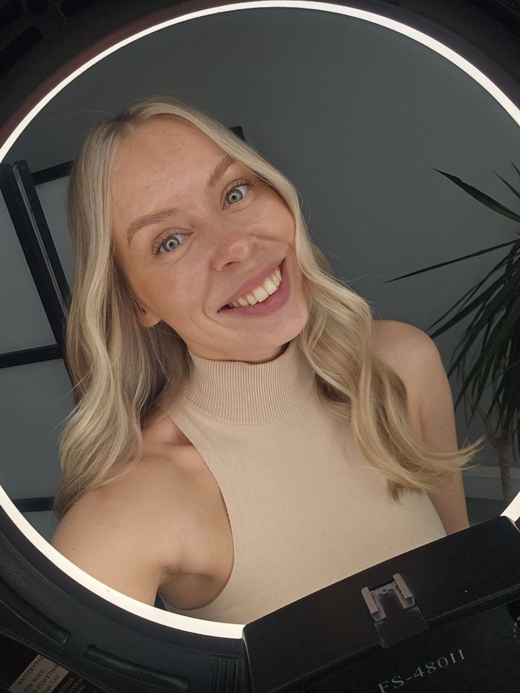

Отношения не нужно спасать, в грязь не нужно вставать, ты уже умеешь любить и быть любимой — просто никто не объяснил механику реальных действий. Я помогу выбраться из замкнутого круга одних и тех же ошибок.

Это не значит, что у тебя всё плохо. Это значит, что ты застряла в круге, из которого тебе просто никто не показал выход. Я показываю.
Большинство курсов по отношениям учат тебя уходить. «Ты достойна большего», «не терпи», «беги при первом красном флаге». Я так не работаю.
Я за то, чтобы разобраться. Понять, что происходит, свою роль в этом, и инструменты, чтобы это изменить. Не потому что надо терпеть — а потому что большинство проблем в отношениях решаемы. Если знать как.
Я не психолог из учебника — я женщина, которая сама прошла своё «уйти или остаться», свои потери и вернулась. По первому образованию я политолог, по второму — преподаватель обществознания (магистратура). По дороге собрала серьёзный профессиональный опыт — крупные городские мероприятия (включая Ural Music Night), Министерство иностранных дел, «Единую Россию». И вместе с этим — приличную коллекцию набитых шишек в личной жизни.
Со стороны могло казаться, что всё в порядке — годы вместе, не самый худший расклад. Но я знаю, как это на самом деле — изнутри. И знаю, что «не так уж плохо» и «по-настоящему хорошо» — это очень разные вещи.
Теперь помогаю другим не наступать на те же грабли — опираясь не на эзотерику, а на Готтмана, Сью Джонсон, теорию привязанности и свой собственный реальный опыт.
Моя история →И не делаю вид, что им являюсь. Всё, о чём говорю, — прожила сама: выбор «не тех», одинаковый конец, потери, измены, стена недоверия, одиночество вдвоём, скандалы по кругу, ощущение, что тащишь всё сама, — и я знаю, как из этого выбраться.
Строю не на интуиции, а на тех, кто это десятилетиями изучал: Готтман — 45 лет исследований пар в лаборатории; Сью Джонсон — терапия, которую проверяли в клинике, а не на тренингах «почувствуй вселенную». Я просто перевела это с научного на человеческий.
За мной — три поколения женщин, которые умели строить отношения. Я четвёртая.
И да — я за семью. Не «беги при первом же», не «ты достойна большего, поэтому одна», не «ты сильная и самодостаточная — тебе никто не нужен». А разобраться и починить — если есть что чинить. Если чинить нечего — как минимум разберёшься в себе. А это уже результат.
дошли до финала первого потока — набранного по сарафану, без единого рубля на рекламу. Вот что они говорят:
«Меньше стала гнать на мужа, больше ценить и вслух ему говорить какой он молодец. Он сначала удивился, а потом привык. И что я заметила — стал больше проявлять инициативы сам. Без просьб по сто раз и ругани.»
«Всё так логично построено — сначала не понимаешь к чему это, а потом пазлы складываются в картинку. Как интересно меняется всё, когда начинаешь внедрять минимальные новшества из ступенек. А что будет дальше… 🚀»
«Было сопротивление выполнять домашки — потому что я знала, что это работает. Из серии „хочется и колется“. Спасибо, что показала как интеллект можно использовать в общении с мужчинами по-женски.»
«Это стал внутренний переломный момент. Подача живая, без заезженных скриптов. Обратная связь помогает увидеть себя со стороны. Чувствую — это только начало.»
«Не ожидала что это работает так быстро. Ближайший год-два буду работать над собой чтобы стать Женщиной здорового человека. В школе не преподают то что даёт этот курс — а зря.»
5 минут, бесплатно, и уже понятнее, что с тобой вообще происходит. А там и до курса рукой подать.
«Отношения длиною в жизнь» — курс из 10 шагов о том, как сохранить отношения, выйти из круга ссор и снова услышать партнёра. В основе — методы Джона Готтмана, Сью Джонсон и теория привязанности. Бесплатный тест на тип привязанности помогает понять свой стиль поведения в близости: тревожный, избегающий или надёжный. Для женщин, которые хотят не уйти, а разобраться и починить — без «бросай при первом же» и без обесценивания партнёра.